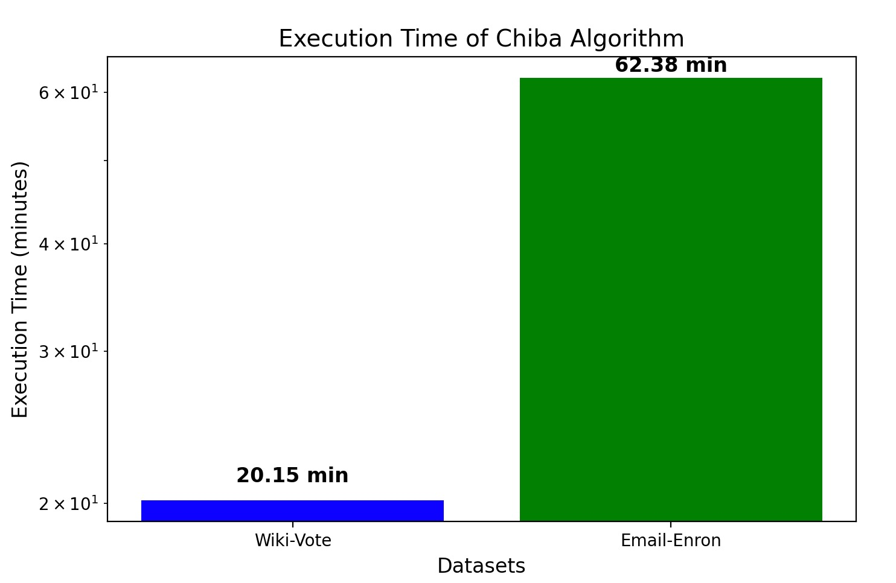

Chiba's Algorithm
Chiba's Algorithm is an efficient method for listing all maximal cliques in a graph, leveraging arboricity to optimize the search.
- Operates by decomposing the graph into low-degree subgraphs for efficient clique enumeration.
- Utilizes the concept of k-core decomposition to reduce redundant computations.
- Processes edges in a structured manner:
- High-degree vertices are processed first, reducing the number of edges explored per vertex.
- Each edge is considered only once, improving efficiency.
- Runs in O(a(G) * m) time, where a(G) is the arboricity of the graph and m is the number of edges.
- Works best for sparse graphs with low arboricity, making it highly efficient for large-scale networks.
Performance Results

Back to Algorithms